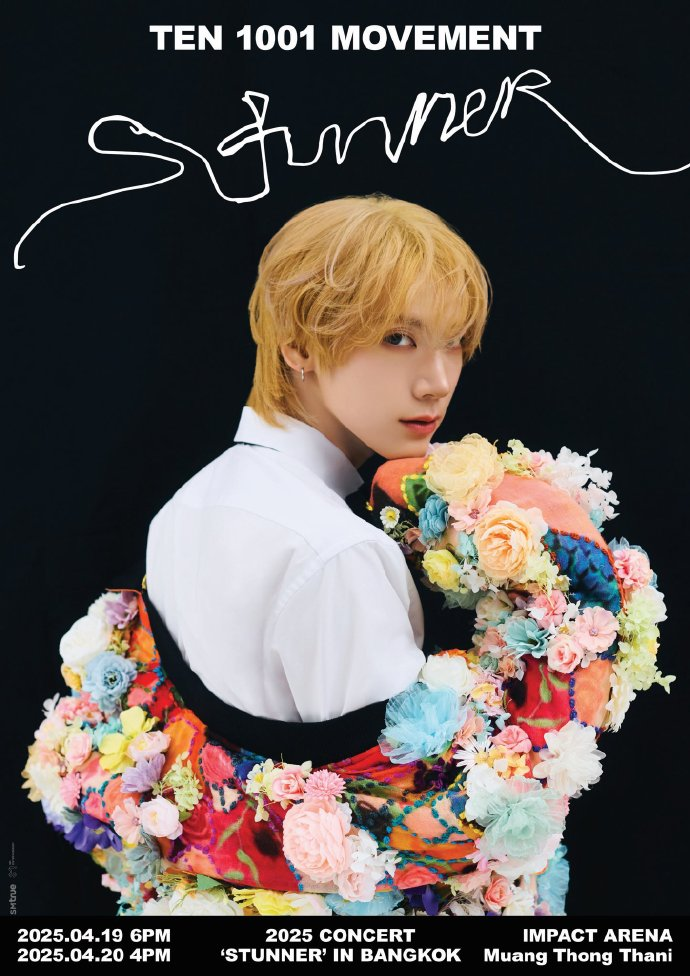

中文
EN
한국어
ไทย

🐱
10BTI
Ten Behavioral Type Indicator
你是哪一种追星方式？
测一测你和TEN之间的
连接符号
20
道题
6
个维度
6
个量化轴
6
种结果
开始测试
all rights reserved by HiTOMi
1 / 20
0%
Q01
← 上一题
all rights reserved by HiTOMi
你和TEN的连接符号
追 星 画 像
维度偏向
分享方式
🔗
分享链接
🖼
生成分享图片
取消
再测一次
分享结果
📋 个人历史结果
📊 查看统计数据
加载中…
测试时间
结果
暂无历史记录
留 言 板
0 / 500
提交留言
all rights reserved by HiTOMi
×
长按图片保存到相册